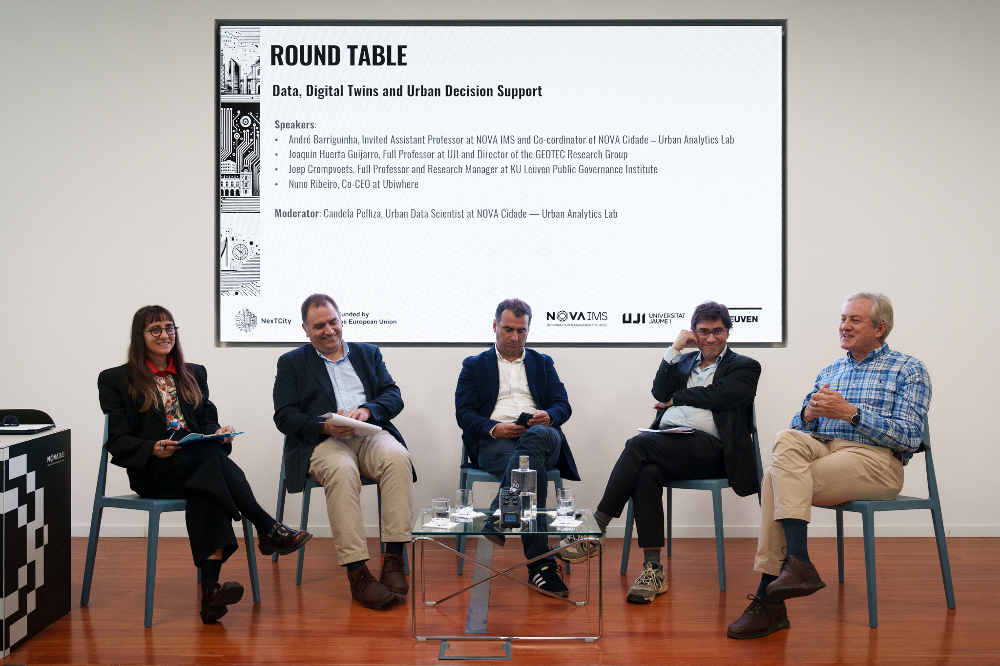
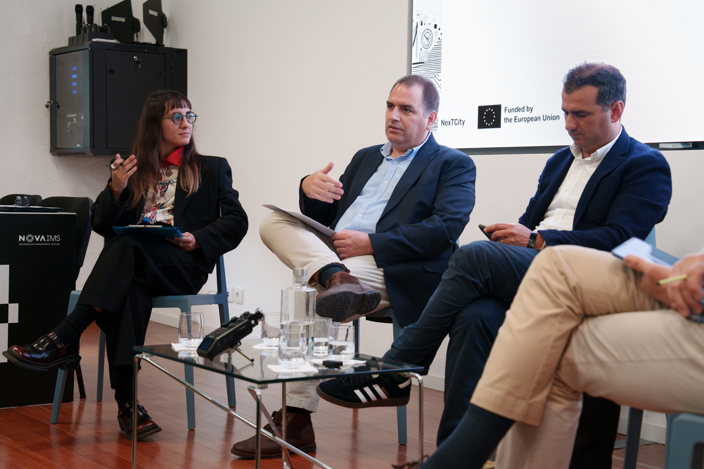
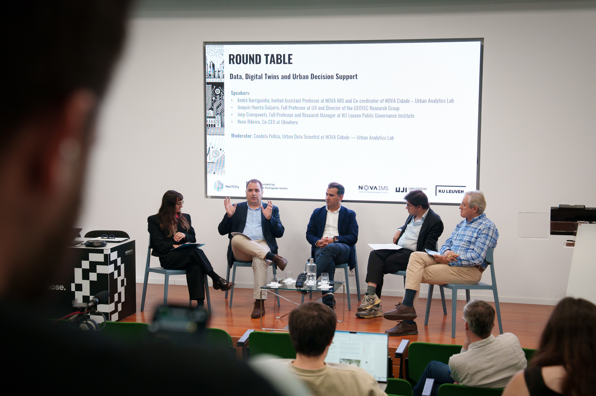
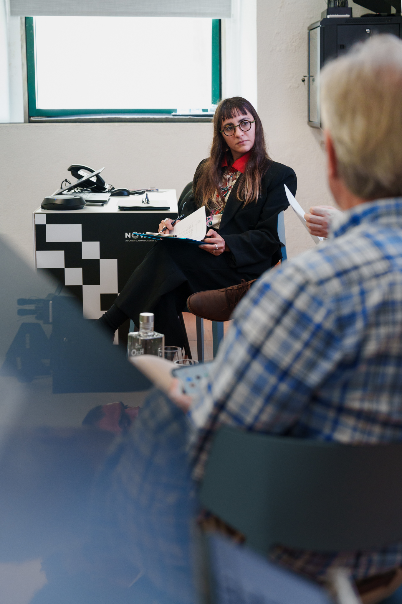

Data, Digital Twins & Urban Decision Support
Roundtable: 'Data, Digital Twins & Urban Decision Support'




Panel moderator of the roundtable held in the context of the NexTCity Networking Event 2026, discussing the role of geographic data and digital twins in supporting urban decision-making and planning processes.
- Digital Twins
- NexTCity